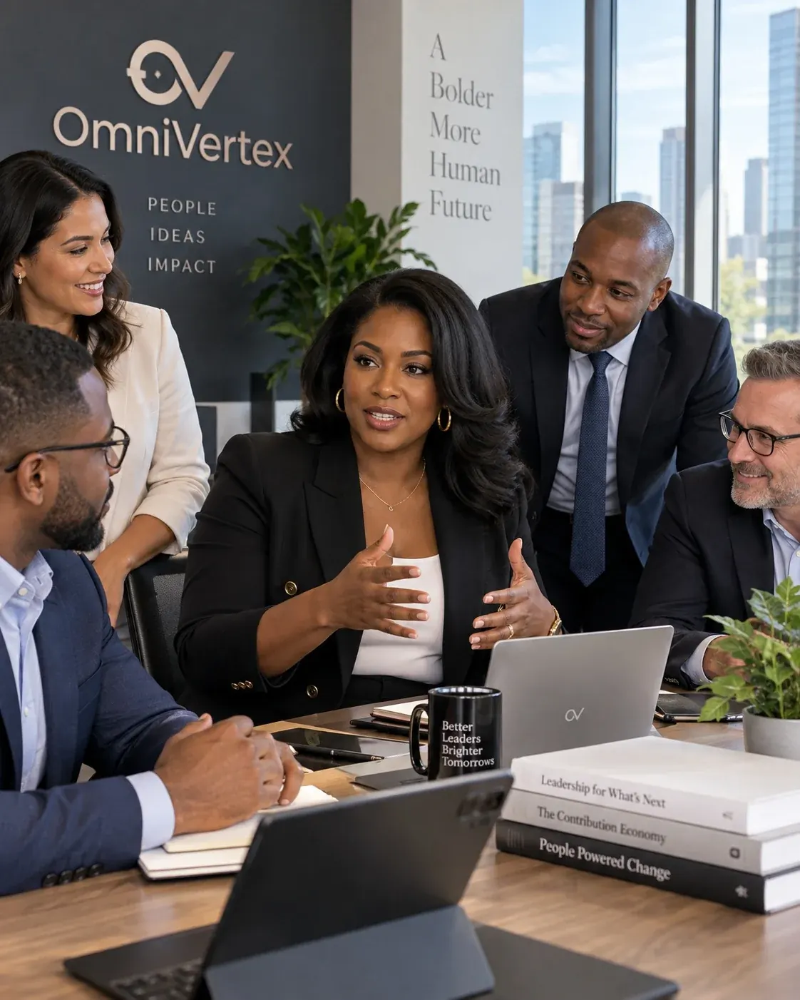

LEARN
Develop leadership, professional, and personal capability through courses, cohorts, workshops, labs, and facilitated learning experiences.
Explore LearningOmniVertex Group is a leadership development, professional growth, research, and collaboration ecosystem for people and organizations committed to continuous learning, meaningful contribution, and principled leadership.

OmniVertex is built for people who intend to grow beyond information. We develop leaders, strengthen professional capability, advance applied research, and create spaces where practitioners can think, test ideas, contribute expertise, and build together.
Professional development, personal growth, collaborative learning, research, and Kingdom-centered alignment come together in one ecosystem—so learning becomes practice, insight becomes contribution, and leadership becomes more intentional and consequential.
Leadership development, applied research, professional collaboration, and organizational growth are connected here—not treated as separate work.
Develop leadership, professional, and personal capability through courses, cohorts, workshops, labs, and facilitated learning experiences.
Explore LearningEngage with applied inquiry, practitioner research, expert review, emerging leadership questions, and knowledge designed to strengthen real-world practice.
Explore ResearchConnect through professional working groups, roundtables, peer communities, research circles, and cross-disciplinary initiatives.
Explore CollaborationStrengthen leaders and learning cultures through custom development, facilitation, curriculum design, research, and advisory support.
Explore Organizational SolutionsExplore courses, cohorts, workshops, labs, and facilitated experiences that strengthen leadership judgment, professional capability, personal growth, and the ability to put insight into practice.
A facilitated learning experience focused on strengthening leadership judgment, practical decision-making, self-awareness, and the ability to translate insight into action.
Explore the ExperienceStructured spaces for practice, reflection, application, and peer learning.
Focused development around leadership judgment, capability, and real-world challenges.
OmniVertex connects practitioner insight, structured inquiry, expert review, and knowledge translation so research can inform what leaders actually do.
Professional collaboration becomes more useful when it has purpose, structure, and room for different perspectives.
For OmniVertex, principled leadership includes more than skills. It also involves stewardship, character, integrity, responsibility, service, discernment, and purpose.
OmniVertex partners with organizations that need development work designed around their actual people, goals, and operating context.
Explore Organizational SolutionsA practical look at why leadership growth requires reflection, practice, feedback, and disciplined application.
Read InsightsLearn, collaborate, contribute expertise, participate in research, or engage OmniVertex around organizational needs.
Explore Your Pathway